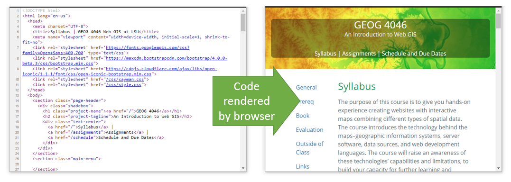
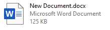

Lesson 1 Web Page Basics - Intro to web pages, HTML, CSS, and JavaScript
Terms: code, web browser, web page, content
This is a Web GIS beginner’s guide to web pages. The information in this lesson is the foundation for understanding how web pages work and how to code your own web maps. The focus will be on the three computer languages used in web pages—HTML, CSS, and JavaScript—and how web browsers interpret these languages to display a web page.
The goal of this lesson is to give enough background on HTML, CSS, and JavaScript that you would be able to follow a basic guide to Web GIS JavaScript libraries offered by Google, Esri, Leaflet, and others.
Your goal should be to understand the concepts, not try to memorize code.
Overview
Web pages are documents containing information in the form of text, maps, images, and other media. This is often described as “content”. Web page documents are displayed in a web browser to deliver content to the audience. The browser reads the source code of the document and displays the output to the user. The output is a rendered version of the document, meaning the browser interprets the source code to determine how to display the document, e.g., what font color and size or where to show an image. The “code” can be considered a set of written instructions for the browser to follow.

Figure 1. The job of the web browser is to retrieve a document from a URL, interpret the document’s code, and display the rendered web page in the browser window for the user to see, including all linked images, videos, and other media.
Web Browsers and Web Pages
If you are reading this lesson, you might not have much experience with creating web page documents from scratch, but there is another type of document that you have probably created many times: a Word document. To understand how web pages and browsers work, let’s first look at how a browser is similar to a word processor, Microsoft Word.

You can follow along by downloading the example document.
Opening the file in Word shows a rendered document with formatted text “This is a Word document” and an image of a map.

Figure 2. A document rendered by Microsoft Word. The way that a word processing program renders a document is similar to how a browser renders a web page.
Now let’s look behind the scenes in the docx file. If you rename the file from New Document.docx to New Document.zip in Windows File Explorer, you can open the zip file like a folder and see that the Word document is actually a collection of files and folders.
_rels
docProps
word
[Content_Types].xml
In New Document.zip, browse into the word folder. These files contain the code that tells Word how to display the document with the correct content (fonts, colors, graphics, etc.). Find document.xml and open it with Internet Explorer. The highlights in the screenshot show some recognizable text within the code—“This is a Word document”, a color code to make “Word” red, and a reference to the map image file.

Figure 3. This document is written in a language called XML. It is a file included in a Microsoft Word document that tells the program how to display the document.
Note that the map image is stored in a file separate from document.xml, which has a piece of code that points to the image file. Therefore, Word will read document.xml for instructions for how to display the document, and when it gets to the code pointing to the image, Word will look for the image file and display it within the document. In this example, the image is referenced with its original file name map.png. We can find this image file in the word\media folder, renamed to image1.png.
The word processor’s job is to assemble and make sense of all of those different files and folders in order to display the content to the user. This is basically how a web browser works when it assembles the various web pages and graphics that make a website. Instead of opening a document file saved on your computer, the web browser usually opens a document online via a URL.
URLs and files
The URL is an address to another computer on the Internet, a web server, and to a specific document on that web server, for example https://example.com/index.html. The document in this case is called index.html, and it contains the code that the browser will use to display the text, download and display images, and follow any other instructions needed to correctly display the web page.
If you omit the file name from the URL, the web server will assume you want the default document, which is often index.html. Therefore:
https://example.com
is the same as:
https://example.com/index.html
The .html refers to Hypertext Markup Language, one of the main languages that browsers use to interpret web page documents. The two other languages are CSS and JavaScript.
HTML, CSS, and JavaScript
While there are many computer languages used to generate web pages and applications on web servers, only three languages are used to deliver the web page to the browser:
- Hypertext Markup Language (HTML) gives the browser information about the content and what resources to download, e.g., images, CSS files, and JavaScript files.
- Cascading Style Sheets (CSS) contain rules for how web page content should be presented, such as fonts and colors.
- JavaScript (JS) is a programming language that allows us to give instructions for how the browser should react to certain events, such as a click.
In short, HTML, CSS, and JS are the content, style, and behavior of a web page.
The three languages are often embodied in the website as three separate files:
index.html(standard file name)something.csssomething.js
They are linked together through the HTML file, which contains special elements, link and script, which refer to the CSS and JavaScript, respectively. When a browser reads your web page’s HTML, it will enounter these tags and download the files they reference, giving the browser additional instructions on how the web page should look and act.

Figure 4. The link and script tags allow you to specify CSS and JavaScript files to include with your HTML.
Specifically for web maps, the HTML, CSS, and JavaScript each serve roles in displaying a web map on a web page.
- HTML: create an “invisible box” that will be like a canvas on which the map is drawn.
- CSS: set the dimensions of the box to control the size of the map on the screen, as well as the appearance of popups and other visual components of the map.
- JS: Retrieve data from web services, draw layers on the map canvas (in the HTML), listen for user clicks, zooms, pans, etc.

Figure 5. The roles that HTML, CSS, and JavaScript play in displaying a map on a web page.
In terms of how those roles translate into code in each HTML, CSS, and JS file, each map displayed on the web page has a unique id that is referenced in the HTML, CSS, and JS to work together to control the appearance and behavior of the map.

Figure 6. The same id will be used to identify the map in the HTML, CSS, and JavaScript. The id is a unique name that you create.
All three components are needed.
- Without the HTML, there would be no
divelement to draw the map in. - Without the CSS, the
divcould exist in the HTML, but it would not have a height, and would therefore be invisible. - Without the JS, the
divcould exist in the HTML with a height specified in the CSS, but there would be no map because the layers weren’t retrieved and drawn on the map, and users could not click or scroll on the map.
The browser reads the three languages and combines the instructions to create a seamless web page that hides the complexities behind the scenes.
Note: it is possible to put CSS into an HTML file directly with the style tag, and JavaScript can be written between script tags in and HTML file. Doing so would leave you with a single index.html and no separate .css and .js files. However, in our assignments, we will always put scripts and styles in separate files, meaning each assigment will have an index.html, a .css file, and a .js file.
Summary
A web browser opens a web page via a URL and renders the content on screen. The web browser reads the web page’s source code for instructions on how to display the web page and react to user interactions, such as mouse clicks. The next lessons on HTML, CSS, and JavaScript will focus on understanding and writing source code, in preparation for developing our own web maps.
Other Learning Resources
- Codecademy - Introduction to HTML: Elements and Structure
- This is a long lesson but doing only the first few parts could still be helpful.
- Mozilla - Getting Started with the Web